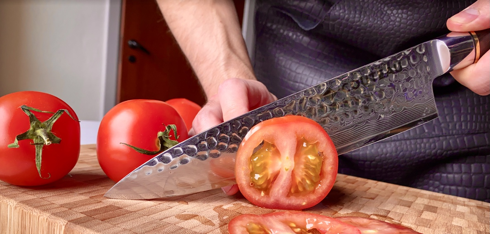

Hvordan plejer og vedligeholder du bedst din japanske Damaskus kniv fra Couteau?
Knive bør aldrig kommes i opvaskemaskinen - punktum! Grunden til dette er at det høje indhold af kalk og salt i vandet, vil slide på knivstålet og samtidigt vil din kniv være fugtig i længere tid - hvilket igen, er hårdt ved stålet. Derfor - vask altid dine knive op i hånden.
Brug aldrig dine knive til andet end madlavning. Det slider på knivstålet og ender i sidste ende med at ødelægge dem. Selv om dmaskusstål er slidstrækt og hårdheden høj, så vil det unægteligt stadigvæk slide - på en forkert måde, på din kniv, hvis du bruger den til andet end madlavning og det den er beregnet til. Så ønsker du at passe godt på din kniv, så hold dig til at bruge den til det den er beregnet til.
Man bør også tænke på det underlag man bruger, når man vil bruge sin kniv. Det optimale underlag at skære på, vil være et skærebræt af enten godt solidt træ eller bambus, da dette vil minimere slitage på kniven.
Opbevaring af din kniv er også en vigtig del af plejerutinen. Ligger knivene i en skuffe, vil de skramle sammen og dette slider på knivene. De kan ende med at chippe eller blive sløve. Mange danskere vil måske ty til at forsøge sig med en magnetisk knivskinne, men dette dur ikke når man har med damaskusstål at gøre - stålet er simpelthen ikke magnetisk nok. Derfor vil vi anbefale at du opbevarer dine knive i en knivskinne eller knivblok. Dette gør bla at bladet på dine knive ikke slides unødigt og det er den optimale måde at opbevare sine knive forsvarligt på.  Den sidste ting du kan gøre for at holde dine knive i god stand mange år frem i tiden, er at slibe dem. De starter naturligvis ud med at være enormt skarpe, men som alt andet der bruges - og slides, vil dine knive også blive lettere sløve med tiden. Dette kan du afhjælpe ved at slibe dem regelmæssigt og på den rette måde. Den optimale måde at slibe dine knive på, er ved at bruge enten strygestål eller en slibesten. Dette vil hjælpe til at opretholde den rette vinkel på knivbladet og dermed bevare hårheden i stålet. Det anbefales at gøre mindst én gang om måneden.
Hvis ikke du har mod på at kaste dig ud i at slibe dine knive selv, kan du også sagtens sende dem til en professionel knivsliber.
God fornøjelse med din nye kniv!